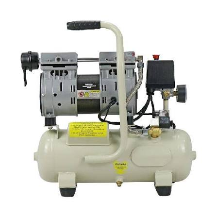
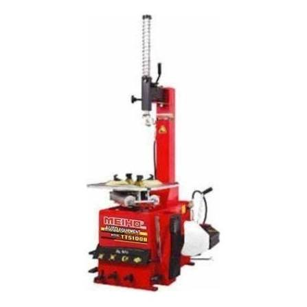

Hydraulic Floor Jacks
₱1,800
Reliable floor jacks for safe, efficient lifting in your workshop.

Your trusted shop for reliable tires and smooth rides.
I am a BTLED-ICT student who knows the importance of proper maintenance for a safe, everyday commute.

₱1,800
Reliable floor jacks for safe, efficient lifting in your workshop.
₱3,400
Keep your tools powered and tires inflated with our heavy-duty compressors.

₱8,200
Precision-engineered tire changing machines for fast, safe mounting.
